Sorted by review priority. References are AI-audited, not human-reviewed.
handwritten_correspondence · scan_or_reproduction · CER: True · Judge: True
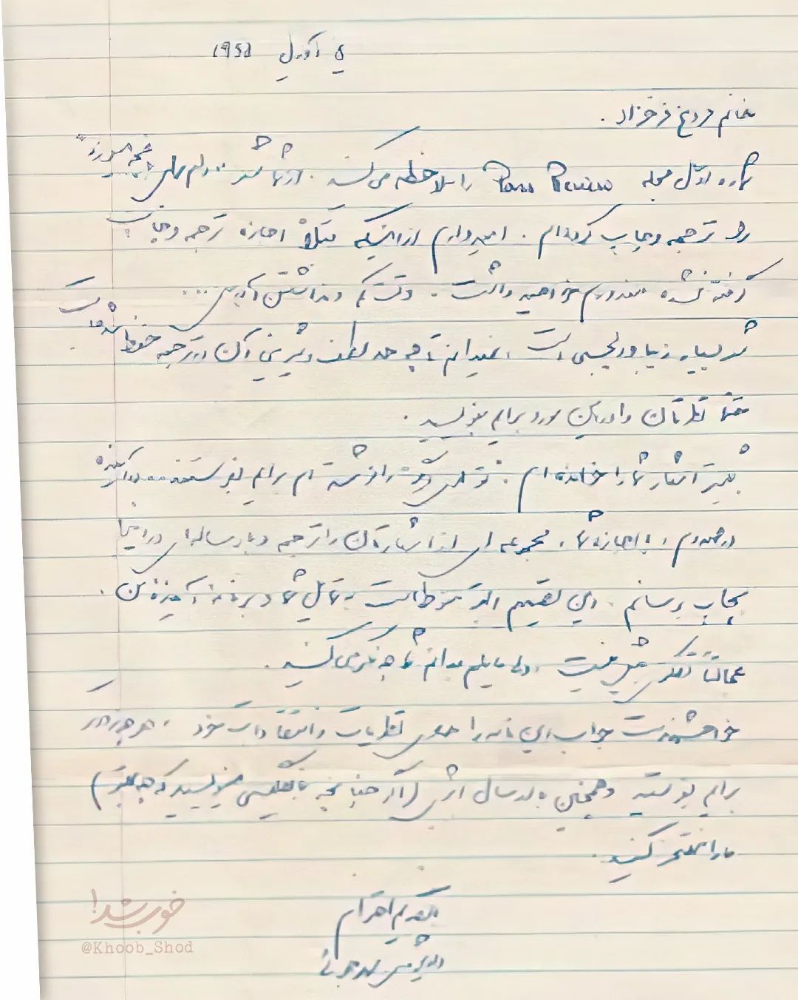
5 آوریل 1954 خانم فروغ فرخزاد، شماره اول مجله Paris Review را ملاحظه فرمودید. در آنجا چند شعر از اشعار شما را که ترجمه و چاپ کردهام. امیدوارم از اینکه بی اجازه ترجمه و چاپ کردهام معذور خواهید داشت. و تبریک عرض میکنم که این شعرهای شما بسیار زیبا و دلپذیر است. نمیدانم به چه حد لطف و شیرینی آن در ترجمه محفوظ مانده است. حتماً نظرتان را در این مورد برایم بنویسید. بقیه اشعار شما را خواندهام. بزودی آنها را نیز خواهم توانست ترجمه و چاپ کنم. در صورتی که اجازه بدهید، مجموعهای از اشعارتان را ترجمه و بصورت کتاب در اینجا بهچاپ رسانم. این تصمیم البته منوط است به تمایل شما و پذیرفتن این پیشنهاد من. عجالتاً تصمیمی نگرفتهام ولی مایلم بدانم نظر شما چیست. خواهشمند است جواب این نامه را همهرقم نظریات و انتقادات خود هر چه زودتر برایم بنویسید و همچنین در ارسال اگر (اگر چنانچه به انگلیسی بنویسید که چه بهتر) ما را راهنمایی کنید. با تقدیم احترام الکسندر جوان خوب شد @Khoob_Shod
5 آوریل 1954 خانم فروغ فرخزاد، شماره اول مجله Paris Review را ملاحظه فرمودید. در آنجا چند شعر از اشعار شما را که ترجمه و چاپ کردهام. امیدوارم از اینکه بی اجازه ترجمه و چاپ کردهام معذور خواهید داشت. و تبریک عرض میکنم که این شعرهای شما بسیار زیبا و دلپذیر است. نمیدانم به چه حد لطف و شیرینی آن در ترجمه محفوظ مانده است. حتماً نظرتان را در این مورد برایم بنویسید. بقیه اشعار شما را خواندهام. بزودی آنها را نیز خواهم توانست ترجمه و چاپ کنم. در صورتی که اجازه بدهید، مجموعهای از اشعارتان را ترجمه و بصورت کتاب در اینجا بهچاپ رسانم. این تصمیم البته منوط است به تمایل شما و پذیرفتن این پیشنهاد من. عجالتاً تصمیمی نگرفتهام ولی مایلم بدانم نظر شما چیست. خواهشمند است جواب این نامه را همهرقم نظریات و انتقادات خود هر چه زودتر برایم بنویسید و همچنین در ارسال اگر (اگر چنانچه به انگلیسی بنویسید که چه بهتر) ما را راهنمایی کنید. با تقدیم احترام الکسندر جوان خوب شد @Khoob_Shod
Review note: Dense cursive handwriting, date, Latin title, signature and watermark. Full independent human transcription required.
[]
score_all_visible_text
handwritten_quote · rotated_phone_photo · CER: True · Judge: True
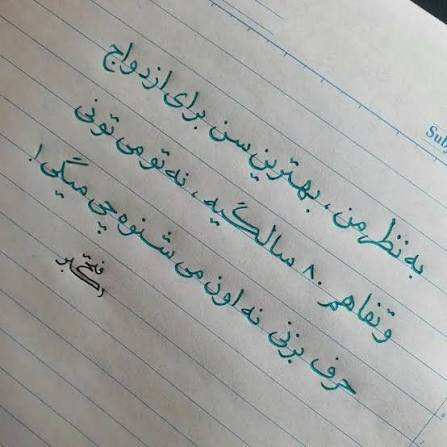
به نظر من، بهترین سن برای ازدواج و تفاهم ۸۰ سالگیه، نه تو میتونی حرف بزنی نه اون میشنوه چی میگی!
به نظر من، بهترین سن برای ازدواج و تفاهم ۸۰ سالگیه، نه تو میتونی حرف بزنی نه اون میشنوه چی میگی! فتحی اکبر
Review note: Attribution/signature is uncertain. It is excluded from the refined scorable text until human confirmation.
[
{
"type": "uncertain_attribution",
"legacy_text": "فتحی\nاکبر",
"reason": "Attribution is not confidently legible from the image."
}
]exclude_uncertain_attribution
handwritten_public_note_on_printed_form · low_resolution_reproduction · CER: True · Judge: True
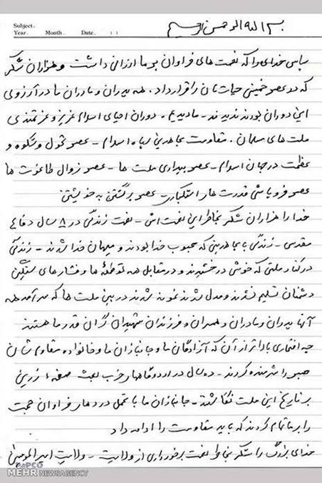
Subject: ________ Year: ________ Month: ________ Date: __ __ بسم الله الرحمن الرحیم سپاس خدای را که نعمت های فراوان بر ما ارزانی داشت و هزاران شکر که در عصر خمینی حیاتمان را قرار داد. همه پدران و مادران ما در آرزوی این دوران بودند ندیدند - ما دیدیم - دوران احیای اسلام عزیز و عزتمندی ملتهای مسلمان - مقاومت مجاهدین راه اسلام - عصر تحول و شکوه و عظمت در جهان اسلام - عصر بیداری ملتها - عصر زوال طاغوتها عصر فروپاشی قدرتهای استکباری - عصر برگشتن به خویشتن خدا را هزاران شکر بخاطر این نعمتها - نعمت زندگی در ۸ سال دفاع مقدس - زندگی با مجاهدینی که محبوب خدا بودند و میهمان خدا شدند - زندگی در کنار ملتی که خوش درخشیدند و در مقابل همه توطئهها و فشارهای سنگین دشمنان تسلیم نشدند و مدل شدند نمونه شدند در بین ملتها که سرآمد همه آنها پدران و مادران و همسران و فرزندان شهیدان گرانقدر ما هستند چه افتخاری بالاتر از آن که آزادگان ما و جانبازان ما و خانواده مقاومشان صبر را شرمنده کردند - ده سال در اردوگاهها غربت صفحه زرینی بر تاریخ این ملت نگاشتند - جانبازان ما با تحمل دردهای فراوان حجت را بر ما تمام کردند که باید مقاومت را ادامه داد خدای بزرگ را شکر بخاطر نعمت برخورداری از ولایت - ولایت امیرالمؤمنین خبرگزاری مهر - MEHR NEWS AGENCY
Subject: ________ Year: ________ Month: ________ Date: __ __ بسم الله الرحمن الرحیم سپاس خدای را که نعمت های فراوان بر ما ارزانی داشت و هزاران شکر که در عصر خمینی حیاتمان را قرار داد. همه پدران و مادران ما در آرزوی این دوران بودند ندیدند - ما دیدیم - دوران احیای اسلام عزیز و عزتمندی ملتهای مسلمان - مقاومت مجاهدین راه اسلام - عصر تحول و شکوه و عظمت در جهان اسلام - عصر بیداری ملتها - عصر زوال طاغوتها عصر فروپاشی قدرتهای استکباری - عصر برگشتن به خویشتن خدا را هزاران شکر بخاطر این نعمتها - نعمت زندگی در ۸ سال دفاع مقدس - زندگی با مجاهدینی که محبوب خدا بودند و میهمان خدا شدند - زندگی در کنار ملتی که خوش درخشیدند و در مقابل همه توطئهها و فشارهای سنگین دشمنان تسلیم نشدند و مدل شدند نمونه شدند در بین ملتها که سرآمد همه آنها پدران و مادران و همسران و فرزندان شهیدان گرانقدر ما هستند چه افتخاری بالاتر از آن که آزادگان ما و جانبازان ما و خانواده مقاومشان صبر را شرمنده کردند - ده سال در اردوگاهها غربت صفحه زرینی بر تاریخ این ملت نگاشتند - جانبازان ما با تحمل دردهای فراوان حجت را بر ما تمام کردند که باید مقاومت را ادامه داد خدای بزرگ را شکر بخاطر نعمت برخورداری از ولایت - ولایت امیرالمؤمنین خبرگزاری مهر - MEHR NEWS AGENCY
Review note: Dense handwriting plus printed header/footer and watermark. Independently verify every line.
[]
score_all_visible_text
handwritten_correspondence · scan_or_reproduction · CER: True · Judge: True
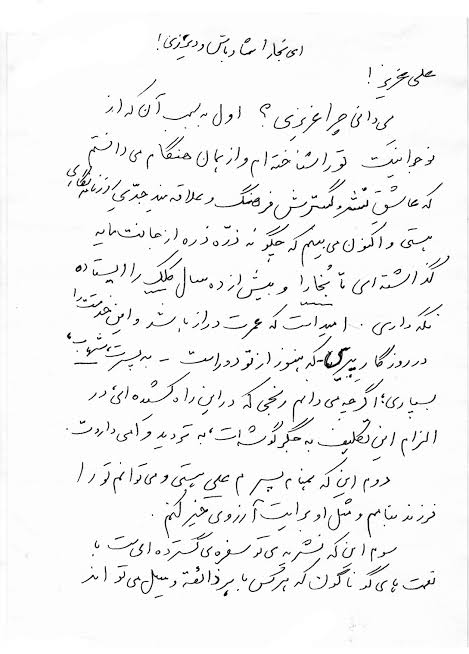
ای بخارا شاد باش و دیر زی! علی عزیز! میدانی چرا عزیزی؟ اول به سبب آن که از نوجوانیت تو را شناختهام و از همان هنگام میدانستم که عاشق نشر و گسترش فرهنگ و علاقهمند جدی ارزشهای ملی هستی و اکنون میبینم که چگونه ذره ذره از جانت مایه گذاشتهای تا بخارا و پیش از ده سال کلک را ایستاده نگه داری. امید است که عمرت دراز باشد و این خدمت را در روزگار پیری - که هنوز از تو دور است - به پسری شهاب بسپاری؛ اگرچه میدانم رنجی که در این راه کشیدهای در الزام این تکلیف به جگر گوشهات به تردید وا میداردت. دوم این که همنام پسرم علی هستی و میتوانم تو را فرزند بدانم و مثل او برایت آرزوی خیر کنم. سوم این که نشریه تو سفرهی گستردهای است با نعمتهای گوناگون که هر کس با هر ذائقه و میل تواند
ای بخارا شاد باش و دیر زی! علی عزیز! میدانی چرا عزیزی؟ اول به سبب آن که از نوجوانیت تو را شناختهام و از همان هنگام میدانستم که عاشق نشر و گسترش فرهنگ و علاقهمند جدی ارزشهای ملی هستی و اکنون میبینم که چگونه ذره ذره از جانت مایه گذاشتهای تا بخارا و پیش از ده سال کلک را ایستاده نگه داری. امید است که عمرت دراز باشد و این خدمت را در روزگار پیری - که هنوز از تو دور است - به پسری شهاب بسپاری؛ اگرچه میدانم رنجی که در این راه کشیدهای در الزام این تکلیف به جگر گوشهات به تردید وا میداردت. دوم این که همنام پسرم علی هستی و میتوانم تو را فرزند بدانم و مثل او برایت آرزوی خیر کنم. سوم این که نشریه تو سفرهی گستردهای است با نعمتهای گوناگون که هر کس با هر ذائقه و میل تواند
Review note: Bottom is cropped mid-sentence. Confirm the crop boundary and the final visible characters.
[]
score_all_visible_text
handwritten_anecdote_card · low_resolution_phone_photo · CER: True · Judge: True
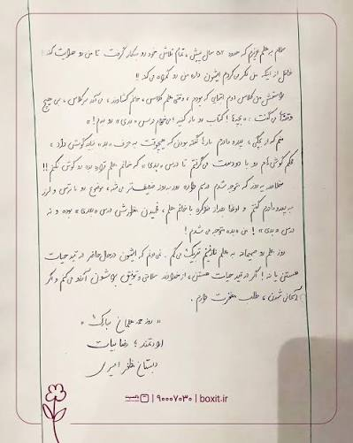
سلام به معلم عزیزم که حدود ۵۲ سال پیش، تمام تلاش خود رو بکار گرفت تا من رو هدایت کند؛ غافل از اینکه من فکر میکردم ایشون داره من رو گمراه میکند!! راستش من کلاس دوم ابتدایی که بودم، وقتی معلم کلاس، خانم کشاورز، میآمد سر کلاس، بی هیچ وقفهای میگفت: «بچهها! کتاب رو باز کنید، میخوام درس «بدی» رو بدم!» منم که از بچگی، پدر و مادرم بارها گفته بودند که هیچوقت به حرف «بد» نباید گوش داد، محکم گوشهام رو با دو دست میگرفتم تا درس «بدی» که خانم معلم قراره بده رو گوش نکنم!! خلاصه یه روز که متوجه شدم درسم داره روز به روز ضعیفتر میشه، موضوع رو با ترس و لرز به پدر و مادرم گفتم و اونا بعد از مذاکره با خانم معلم، فهمیدن منظورش درس «بـ ـدی» بوده و نه درس «بدی»! من تازه متوجه میشدم! روز معلم رو صمیمانه به معلم نازنینم تبریک میگم. نمیدونم که ایشون در حال حاضر در قید حیات هستن یا نه! اگر در قید حیات هستن، از خداوند سلامتی و توفیق براشون آرزو میکنم و اگر آسمانی شدن، طلب مغفرت دارم. «روز معلمتان مبارک» ارادتمند؛ رضائیان دبستان مظفر امیری | boxit.ir | ۹۰۰۰۷۰۳۰ | باکسیت
سلام به معلم عزیزم که حدود ۵۲ سال پیش، تمام تلاش خود رو بکار گرفت تا من رو هدایت کند؛ غافل از اینکه من فکر میکردم ایشون داره من رو گمراه میکند!! راستش من کلاس دوم ابتدایی که بودم، وقتی معلم کلاس، خانم کشاورز، میآمد سر کلاس، بی هیچ وقفهای میگفت: «بچهها! کتاب رو باز کنید، میخوام درس «بدی» رو بدم!» منم که از بچگی، پدر و مادرم بارها گفته بودند که هیچوقت به حرف «بد» نباید گوش داد، محکم گوشهام رو با دو دست میگرفتم تا درس «بدی» که خانم معلم قراره بده رو گوش نکنم!! خلاصه یه روز که متوجه شدم درسم داره روز به روز ضعیفتر میشه، موضوع رو با ترس و لرز به پدر و مادرم گفتم و اونا بعد از مذاکره با خانم معلم، فهمیدن منظورش درس «بـ ـدی» بوده و نه درس «بدی»! من تازه متوجه میشدم! روز معلم رو صمیمانه به معلم نازنینم تبریک میگم. نمیدونم که ایشون در حال حاضر در قید حیات هستن یا نه! اگر در قید حیات هستن، از خداوند سلامتی و توفیق براشون آرزو میکنم و اگر آسمانی شدن، طلب مغفرت دارم. «روز معلمتان مبارک» ارادتمند؛ رضائیان دبستان مظفر امیری | boxit.ir | ۹۰۰۰۷۰۳۰ | باکسیت
Review note: Dense low-resolution handwriting with shadow and footer. Full human review required.
[]
score_all_visible_text
printed_book_page_partial_crop · cropped_low_light_phone_photo · CER: True · Judge: True
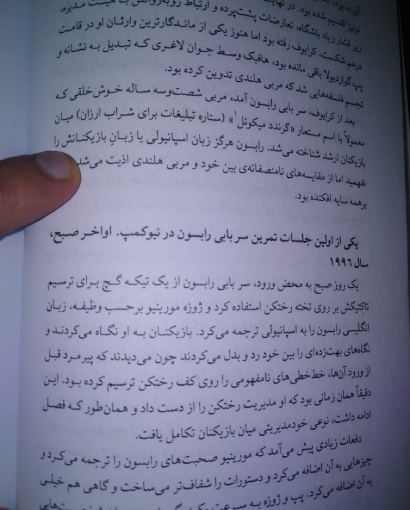
درهم شکست. کرایوف رفته بود اما هنوز یکی از ماندگارترین وارثان او در قامت پپ گواردیولا باقی مانده بود، هافبک وسط جوان لاغری که تبدیل به نشانه و تجسم فلسفههایی شد که مربی هلندی تدوین کرده بود. بعد از کرایوف، سر بابی رابسون آمد، مربی شصتوسه ساله خوشخلقی که معمولاً با اسم مستعار «گرنند میکونل¹» (ستاره تبلیغات برای شراب ارزان) میان بازیکنان ارشد شناخته میشد. رابسون هرگز زبان اسپانیولی یا زبان بازیکنانش را نفهمید اما از مقایسههای نامنصفانهی بین خود و مربی هلندی اذیت میشد که برهمه سایه افکنده بود. یکی از اولین جلسات تمرین سر بابی رابسون در نیوکمپ. اواخر صبح، سال ۱۹۹۶ یک روز صبح به محض ورود، سر بابی رابسون از یک تیکه گچ برای ترسیم تاکتیکش بر روی تخته رختکن استفاده کرد و ژوزه مورینیو برحسب وظیفه، زبان انگلیسی رابسون را به اسپانیولی ترجمه میکرد. بازیکنان به او نگاه میکردند و نگاههای بهتزدهای را بین خود رد و بدل میکردند چون میدیدند که پیرمرد قبل از ورود آنها، خطخطیهای نامفهومی را روی کف رختکن ترسیم کرده بود. این دقیقاً همان زمانی بود که او مدیریت رختکن را از دست داد و همانطور که فصل ادامه داشت، نوعی خودمدیریتی میان بازیکنان تکامل یافت. دفعات زیادی پیش میآمد که مورینیو صحبتهای رابسون را ترجمه میکرد و چیزهایی به آن اضافه میکرد و دستورات را شفافتر میساخت و گاهی هم خیلی به آن اضافه میکرد.
آورده بود، نونیز تقسیم شده بود. در نهایت هیئت مدیره، زیر فشار زیاد باشگاه، تعارضات پشتپرده و ارتباط رو به درهم شکست. کرایوف رفته بود اما هنوز یکی از ماندگارترین وارثان او در قامت پپ گواردیولا باقی مانده بود، هافبک وسط جوان لاغری که تبدیل به نشانه و تجسم فلسفههایی شد که مربی هلندی تدوین کرده بود. بعد از کرایوف، سر بابی رابسون آمد، مربی شصتوسه ساله خوشخلقی که معمولاً با اسم مستعار «گرنند میکونل¹» (ستاره تبلیغات برای شراب ارزان) میان بازیکنان ارشد شناخته میشد. رابسون هرگز زبان اسپانیولی یا زبان بازیکنانش را نفهمید اما از مقایسههای نامنصفانهی بین خود و مربی هلندی اذیت میشد که برهمه سایه افکنده بود. یکی از اولین جلسات تمرین سر بابی رابسون در نیوکمپ. اواخر صبح، سال ۱۹۹۶ یک روز صبح به محض ورود، سر بابی رابسون از یک تیکه گچ برای ترسیم تاکتیکش بر روی تخته رختکن استفاده کرد و ژوزه مورینیو برحسب وظیفه، زبان انگلیسی رابسون را به اسپانیولی ترجمه میکرد. بازیکنان به او نگاه میکردند و نگاههای بهتزدهای را بین خود رد و بدل میکردند چون میدیدند که پیرمرد قبل از ورود آنها، خطخطیهای نامفهومی را روی کف رختکن ترسیم کرده بود. این دقیقاً همان زمانی بود که او مدیریت رختکن را از دست داد و همانطور که فصل ادامه داشت، نوعی خودمدیریتی میان بازیکنان تکامل یافت. دفعات زیادی پیش میآمد که مورینیو صحبتهای رابسون را ترجمه میکرد و چیزهایی به آن اضافه میکرد و دستورات را شفافتر میساخت و گاهی هم خیلی به آن اضافه میکرد. پپ و ژوزه به سرعت در گـ...
Review note: Legacy reference contains text outside the visible crop. Refined scorable text excludes clipped opening and closing lines; human confirmation remains required.
[
{
"type": "crop_boundary",
"legacy_text": "آورده بود،\nنونیز تقسیم شده بود. در نهایت هیئت مدیره،\nزیر فشار زیاد باشگاه، تعارضات پشتپرده و ارتباط رو به",
"reason": "Opening text is clipped or outside the visible crop."
},
{
"type": "crop_boundary",
"legacy_text": "پپ و ژوزه به سرعت در گـ...",
"reason": "Closing line is clipped and incomplete."
}
]exclude_partially_clipped_opening_and_closing_lines
printed_checklist_table_form · digital_or_scan · CER: False · Judge: True
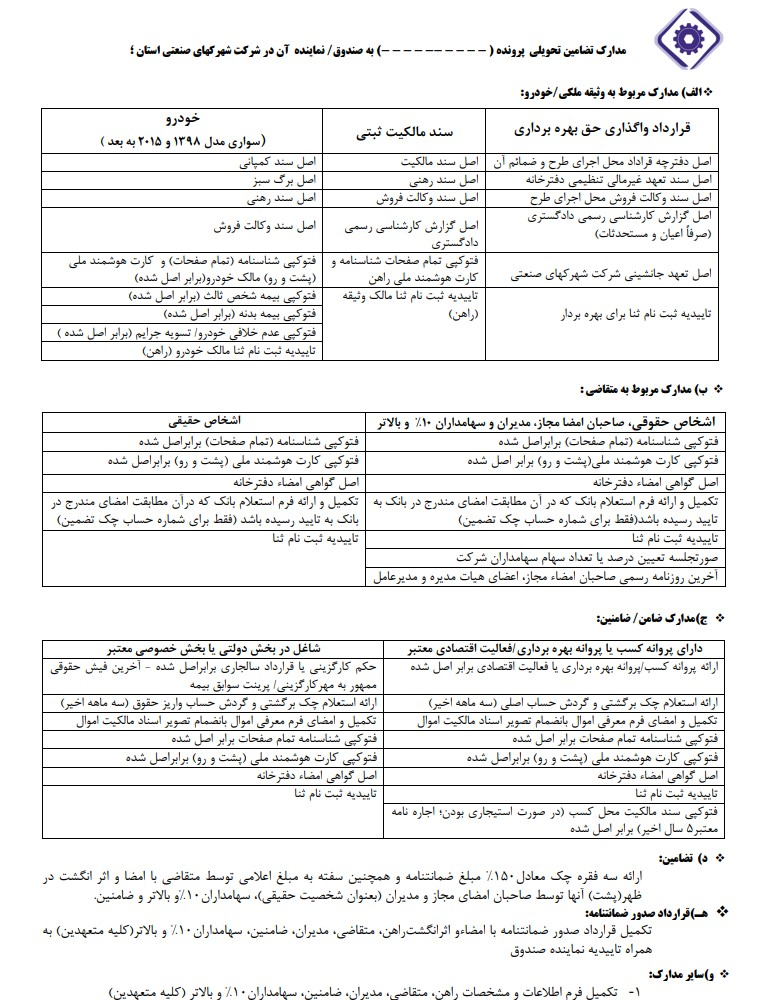
مدارک تضامین تحویلی پرونده ( ---------------- ) به صندوق/ نماینده آن در شرکت شهرکهای صنعتی استان ؛ ❖ الف) مدارک مربوط به وثیقه ملکی/خودرو: قرارداد واگذاری حق بهرهبرداری سند مالکیت ثبتی خودرو (سواری مدل ۱۳۹۸ و ۲۰۱۵ به بعد) اصل دفترچه قرارداد محل اجرای طرح و ضمائم آن اصل سند مالکیت اصل سند کمپانی اصل سند تعهد غیرمالی تنظیمی دفترخانه اصل سند رهنی اصل برگ سبز اصل سند وکالت فروش محل اجرای طرح اصل سند وکالت فروش اصل سند رهنی اصل گزارش کارشناسی رسمی دادگستری (صرفاً اعیان و مستحدثات) اصل گزارش کارشناسی رسمی دادگستری اصل سند وکالت فروش اصل تعهد جانشینی شرکت شهرکهای صنعتی فتوکپی تمام صفحات شناسنامه و کارت هوشمند ملی راهن فتوکپی شناسنامه (تمام صفحات) و کارت هوشمند ملی (پشت و رو) مالک خودرو (برابر اصل شده) تاییدیه ثبت نام ثنا برای بهرهبردار تاییدیه ثبت نام ثنا مالک وثیقه (راهن) فتوکپی بیمه شخص ثالث (برابر اصل شده) فتوکپی بیمه بدنه (برابر اصل شده) فتوکپی عدم خلافی خودرو/ تسویه جرایم (برابر اصل شده) تاییدیه ثبت نام ثنا مالک خودرو (راهن) ❖ ب) مدارک مربوط به متقاضی : اشخاص حقوقی، صاحبان امضا مجاز، مدیران و سهامداران ۱۰٪ و بالاتر اشخاص حقیقی فتوکپی شناسنامه (تمام صفحات) برابر اصل شده فتوکپی شناسنامه (تمام صفحات) برابر اصل شده فتوکپی کارت هوشمند ملی (پشت و رو) برابر اصل شده فتوکپی کارت هوشمند ملی (پشت و رو) برابر اصل شده اصل گواهی امضاء دفترخانه اصل گواهی امضاء دفترخانه تکمیل و ارائه فرم استعلام بانک که در آن مطابقت امضای مندرج در بانک به تایید رسیده باشد (فقط برای شماره حساب چک تضمین) تکمیل و ارائه فرم استعلام بانک که در آن مطابقت امضای مندرج در بانک به تایید رسیده باشد (فقط برای شماره حساب چک تضمین) تاییدیه ثبت نام ثنا تاییدیه ثبت نام ثنا صورتجلسه تعیین درصد یا تعداد سهام سهامداران شرکت آخرین روزنامه رسمی صاحبان امضاء مجاز، اعضای هیات مدیره و مدیرعامل ❖ ج) مدارک ضامن/ ضامنین: دارای پروانه کسب یا پروانه بهرهبرداری / فعالیت اقتصادی معتبر شاغل در بخش دولتی یا بخش خصوصی معتبر ارائه پروانه کسب / پروانه بهرهبرداری یا فعالیت اقتصادی برابر اصل شده حکم کارگزینی یا قرارداد سالجاری برابر اصل شده - آخرین فیش حقوقی ممهور به مهر کارگزینی / پرینت سوابق بیمه ارائه استعلام چک برگشتی و گردش حساب اصلی (سه ماهه اخیر) ارائه استعلام چک برگشتی و گردش حساب واریز حقوق (سه ماهه اخیر) تکمیل و امضای فرم معرفی اموال بانضمام تصویر اسناد مالکیت اموال تکمیل و امضای فرم معرفی اموال بانضمام تصویر اسناد مالکیت اموال فتوکپی شناسنامه تمام صفحات برابر اصل شده فتوکپی شناسنامه تمام صفحات برابر اصل شده فتوکپی کارت هوشمند ملی (پشت و رو) برابر اصل شده فتوکپی کارت هوشمند ملی (پشت و رو) برابر اصل شده اصل گواهی امضاء دفترخانه اصل گواهی امضاء دفترخانه تاییدیه ثبت نام ثنا تاییدیه ثبت نام ثنا فتوکپی سند مالکیت محل کسب (در صورت استیجاری بودن؛ اجاره نامه معتبر ۵ سال اخیر) برابر اصل شده ❖ د) تضامین: ارائه سه فقره چک معادل ۱۵۰٪ مبلغ ضمانتنامه و همچنین سفته به مبلغ اعلامی توسط متقاضی با امضا و اثر انگشت در ظهر (پشت) آنها توسط صاحبان امضای مجاز و مدیران (بعنوان شخصیت حقیقی)، سهامداران ۱۰٪ و بالاتر و ضامنین. ❖ ه) قرارداد صدور ضمانتنامه: تکمیل قرارداد صدور ضمانتنامه با امضاء و اثرانگشت راهن، متقاضی، مدیران، ضامنین، سهامداران ۱۰٪ و بالاتر (کلیه متعهدین) به همراه تاییدیه نماینده صندوق ❖ و) سایر مدارک: ۱- تکمیل فرم اطلاعات و مشخصات راهن، متقاضی، مدیران، ضامنین، سهامداران ۱۰٪ و بالاتر (کلیه متعهدین)
مدارک تضامین تحویلی پرونده ( ---------------- ) به صندوق/ نماینده آن در شرکت شهرکهای صنعتی استان ؛ ❖ الف) مدارک مربوط به وثیقه ملکی/خودرو: قرارداد واگذاری حق بهرهبرداری سند مالکیت ثبتی خودرو (سواری مدل ۱۳۹۸ و ۲۰۱۵ به بعد) اصل دفترچه قرارداد محل اجرای طرح و ضمائم آن اصل سند مالکیت اصل سند کمپانی اصل سند تعهد غیرمالی تنظیمی دفترخانه اصل سند رهنی اصل برگ سبز اصل سند وکالت فروش محل اجرای طرح اصل سند وکالت فروش اصل سند رهنی اصل گزارش کارشناسی رسمی دادگستری (صرفاً اعیان و مستحدثات) اصل گزارش کارشناسی رسمی دادگستری اصل سند وکالت فروش اصل تعهد جانشینی شرکت شهرکهای صنعتی فتوکپی تمام صفحات شناسنامه و کارت هوشمند ملی راهن فتوکپی شناسنامه (تمام صفحات) و کارت هوشمند ملی (پشت و رو) مالک خودرو (برابر اصل شده) تاییدیه ثبت نام ثنا برای بهرهبردار تاییدیه ثبت نام ثنا مالک وثیقه (راهن) فتوکپی بیمه شخص ثالث (برابر اصل شده) فتوکپی بیمه بدنه (برابر اصل شده) فتوکپی عدم خلافی خودرو/ تسویه جرایم (برابر اصل شده) تاییدیه ثبت نام ثنا مالک خودرو (راهن) ❖ ب) مدارک مربوط به متقاضی : اشخاص حقوقی، صاحبان امضا مجاز، مدیران و سهامداران ۱۰٪ و بالاتر اشخاص حقیقی فتوکپی شناسنامه (تمام صفحات) برابر اصل شده فتوکپی شناسنامه (تمام صفحات) برابر اصل شده فتوکپی کارت هوشمند ملی (پشت و رو) برابر اصل شده فتوکپی کارت هوشمند ملی (پشت و رو) برابر اصل شده اصل گواهی امضاء دفترخانه اصل گواهی امضاء دفترخانه تکمیل و ارائه فرم استعلام بانک که در آن مطابقت امضای مندرج در بانک به تایید رسیده باشد (فقط برای شماره حساب چک تضمین) تکمیل و ارائه فرم استعلام بانک که در آن مطابقت امضای مندرج در بانک به تایید رسیده باشد (فقط برای شماره حساب چک تضمین) تاییدیه ثبت نام ثنا تاییدیه ثبت نام ثنا صورتجلسه تعیین درصد یا تعداد سهام سهامداران شرکت آخرین روزنامه رسمی صاحبان امضاء مجاز، اعضای هیات مدیره و مدیرعامل ❖ ج) مدارک ضامن/ ضامنین: دارای پروانه کسب یا پروانه بهرهبرداری / فعالیت اقتصادی معتبر شاغل در بخش دولتی یا بخش خصوصی معتبر ارائه پروانه کسب / پروانه بهرهبرداری یا فعالیت اقتصادی برابر اصل شده حکم کارگزینی یا قرارداد سالجاری برابر اصل شده - آخرین فیش حقوقی ممهور به مهر کارگزینی / پرینت سوابق بیمه ارائه استعلام چک برگشتی و گردش حساب اصلی (سه ماهه اخیر) ارائه استعلام چک برگشتی و گردش حساب واریز حقوق (سه ماهه اخیر) تکمیل و امضای فرم معرفی اموال بانضمام تصویر اسناد مالکیت اموال تکمیل و امضای فرم معرفی اموال بانضمام تصویر اسناد مالکیت اموال فتوکپی شناسنامه تمام صفحات برابر اصل شده فتوکپی شناسنامه تمام صفحات برابر اصل شده فتوکپی کارت هوشمند ملی (پشت و رو) برابر اصل شده فتوکپی کارت هوشمند ملی (پشت و رو) برابر اصل شده اصل گواهی امضاء دفترخانه اصل گواهی امضاء دفترخانه تاییدیه ثبت نام ثنا تاییدیه ثبت نام ثنا فتوکپی سند مالکیت محل کسب (در صورت استیجاری بودن؛ اجاره نامه معتبر ۵ سال اخیر) برابر اصل شده ❖ د) تضامین: ارائه سه فقره چک معادل ۱۵۰٪ مبلغ ضمانتنامه و همچنین سفته به مبلغ اعلامی توسط متقاضی با امضا و اثر انگشت در ظهر (پشت) آنها توسط صاحبان امضای مجاز و مدیران (بعنوان شخصیت حقیقی)، سهامداران ۱۰٪ و بالاتر و ضامنین. ❖ ه) قرارداد صدور ضمانتنامه: تکمیل قرارداد صدور ضمانتنامه با امضاء و اثرانگشت راهن، متقاضی، مدیران، ضامنین، سهامداران ۱۰٪ و بالاتر (کلیه متعهدین) به همراه تاییدیه نماینده صندوق ❖ و) سایر مدارک: ۱- تکمیل فرم اطلاعات و مشخصات راهن، متقاضی، مدیران، ضامنین، سهامداران ۱۰٪ و بالاتر (کلیه متعهدین)
Review note: Legacy plain-text flattening has ambiguous table reading order. Requires cell/row/column structure annotation before CER/WER ranking.
[]
score_all_visible_text
printed_identity_form · low_resolution_scan · CER: False · Judge: True
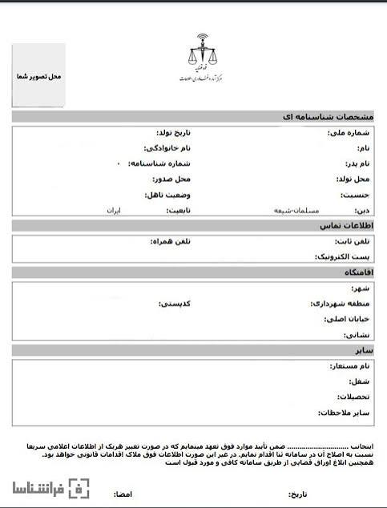
مشخصات شناسنامهای شماره ملی: تاریخ تولد: نام: نام خانوادگی: نام پدر: شماره شناسنامه: محل تولد: محل صدور: جنسیت: وضعیت تاهل: دین: مسلمان-شیعه تابعیت: ایران اطلاعات تماس تلفن ثابت: تلفن همراه: پست الکترونیک: اقامتگاه شهر: منطقه شهرداری: کدپستی: خیابان اصلی: نشانی: سایر نام مستعار: شغل: تحصیلات: سایر ملاحظات: اینجانب ................................ ضمن تأیید موارد فوق تعهد مینمایم که در صورت تغییر هریک از اطلاعات اعلامی سریعاً نسبت به اصلاح آن در سامانه ثنا اقدام نمایم. در غیر این صورت اطلاعات فوق ملاک اقدامات قانونی خواهد بود. همچنین ابلاغ اوراق قضایی از طریق سامانه کافی و مورد قبول است. تاریخ: امضا:
مشخصات شناسنامهای شماره ملی: تاریخ تولد: نام: نام خانوادگی: نام پدر: شماره شناسنامه: محل تولد: محل صدور: جنسیت: وضعیت تاهل: دین: مسلمان-شیعه تابعیت: ایران اطلاعات تماس تلفن ثابت: تلفن همراه: پست الکترونیک: اقامتگاه شهر: منطقه شهرداری: کدپستی: خیابان اصلی: نشانی: سایر نام مستعار: شغل: تحصیلات: سایر ملاحظات: اینجانب ................................ ضمن تأیید موارد فوق تعهد مینمایم که در صورت تغییر هریک از اطلاعات اعلامی سریعاً نسبت به اصلاح آن در سامانه ثنا اقدام نمایم. در غیر این صورت اطلاعات فوق ملاک اقدامات قانونی خواهد بود. همچنین ابلاغ اوراق قضایی از طریق سامانه کافی و مورد قبول است. تاریخ: امضا:
Review note: Form field ordering is ambiguous in plain text. Add region and key-value annotations before ranking.
[]
score_all_visible_text
printed_legal_decision_redacted · scan_or_reproduction · CER: False · Judge: False
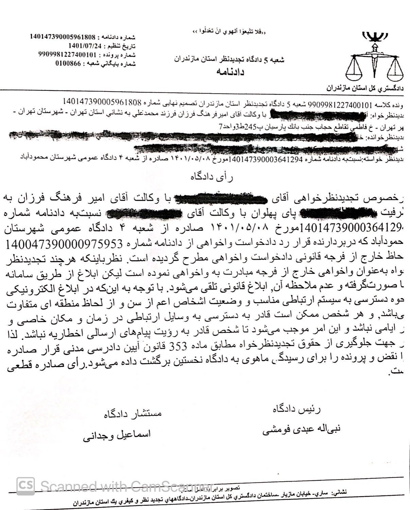
دادگستری کل استان مازندران «فلا تتبعوا الهوی ان تعدلوا» شعبه ۵ دادگاه تجدیدنظر استان مازندران دادنامه شماره دادنامه: 140147390005961808 تاریخ تنظیم: 1401/07/24 شماره پرونده: 9909981227400101 شماره بایگانی شعبه: 0100866 پرونده کلاسه 9909981227400101 شعبه ۵ دادگاه تجدیدنظر استان مازندران تصمیم نهایی شماره 140147390005961808 تجدیدنظرخواه: آقای با وکالت آقای امیرفرهنگ فرزان فرزند محمدعلی به نشانی استان تهران - شهرستان تهران - شهر تهران - خ فاطمی تقاطع حجاب جنب بانک پارسیان پ 245 ط 3 واحد 7 تجدیدنظرخوانده: خانم تجدیدنظر خواسته: نسبت به دادنامه شماره 140147390003641294 مورخ 1401/05/08 صادره از شعبه ۴ دادگاه عمومی شهرستان محمودآباد رأی دادگاه در خصوص تجدیدنظرخواهی آقای با وکالت آقای امیر فرهنگ فرزان به طرفیت پای پهلوان با وکالت آقای نسبت به دادنامه شماره 140147390003641294 مورخ 1401/05/08 صادره از شعبه ۴ دادگاه عمومی شهرستان محمودآباد که دربردارنده قرار رد دادخواست واخواهی از دادنامه شماره 140047390000975953 به لحاظ خارج از فرجه قانونی دادخواست واخواهی مطرح گردیده است. نظرباینکه هرچند تجدیدنظر خواه به عنوان واخواهی خارج از فرجه مبادرت به واخواهی نموده است لیکن ابلاغ از طریق سامانه ثنا صورت گرفته و عدم ملاحظه آن، ابلاغ قانونی تلقی میشود. با توجه به اینکه در ابلاغ الکترونیکی نحوه دسترسی به سیستم ارتباطی مناسب و وضعیت اشخاص اعم از سن و از لحاظ منطقه ای متفاوت میباشد، و هر شخص ممکن است قادر به دسترسی به وسایل ارتباطی در زمان و مکان خاصی و در ایامی نباشد و این امر موجب میشود تا شخص قادر به رؤیت پیامهای ارسالی اخطاریه نباشد. لذا در جهت جلوگیری از تضییع حقوق تجدیدنظرخواه مطابق ماده 353 قانون آیین دادرسی مدنی قرار صادره را نقض و پرونده را برای رسیدگی ماهوی به دادگاه نخستین برگشت داده میشود. رأی صادره قطعی است. رئیس دادگاه مستشار دادگاه نبیاله عبدی فومشی اسماعیل وجدانی نشانی: ساری - خیابان مازیار - ساختمان دادگستری کل استان مازندران - دادگاههای تجدید نظر و کیفری یک استان مازندران تصویر برابر با اصل است Scanned with CamScanner
دادگستری کل استان مازندران «فلا تتبعوا الهوی ان تعدلوا» شعبه ۵ دادگاه تجدیدنظر استان مازندران دادنامه شماره دادنامه: 140147390005961808 تاریخ تنظیم: 1401/07/24 شماره پرونده: 9909981227400101 شماره بایگانی شعبه: 0100866 پرونده کلاسه 9909981227400101 شعبه ۵ دادگاه تجدیدنظر استان مازندران تصمیم نهایی شماره 140147390005961808 تجدیدنظرخواه: آقای با وکالت آقای امیرفرهنگ فرزان فرزند محمدعلی به نشانی استان تهران - شهرستان تهران - شهر تهران - خ فاطمی تقاطع حجاب جنب بانک پارسیان پ 245 ط 3 واحد 7 تجدیدنظرخوانده: خانم تجدیدنظر خواسته: نسبت به دادنامه شماره 140147390003641294 مورخ 1401/05/08 صادره از شعبه ۴ دادگاه عمومی شهرستان محمودآباد رأی دادگاه در خصوص تجدیدنظرخواهی آقای با وکالت آقای امیر فرهنگ فرزان به طرفیت پای پهلوان با وکالت آقای نسبت به دادنامه شماره 140147390003641294 مورخ 1401/05/08 صادره از شعبه ۴ دادگاه عمومی شهرستان محمودآباد که دربردارنده قرار رد دادخواست واخواهی از دادنامه شماره 140047390000975953 به لحاظ خارج از فرجه قانونی دادخواست واخواهی مطرح گردیده است. نظرباینکه هرچند تجدیدنظر خواه به عنوان واخواهی خارج از فرجه مبادرت به واخواهی نموده است لیکن ابلاغ از طریق سامانه ثنا صورت گرفته و عدم ملاحظه آن، ابلاغ قانونی تلقی میشود. با توجه به اینکه در ابلاغ الکترونیکی نحوه دسترسی به سیستم ارتباطی مناسب و وضعیت اشخاص اعم از سن و از لحاظ منطقه ای متفاوت میباشد، و هر شخص ممکن است قادر به دسترسی به وسایل ارتباطی در زمان و مکان خاصی و در ایامی نباشد و این امر موجب میشود تا شخص قادر به رؤیت پیامهای ارسالی اخطاریه نباشد. لذا در جهت جلوگیری از تضییع حقوق تجدیدنظرخواه مطابق ماده 353 قانون آیین دادرسی مدنی قرار صادره را نقض و پرونده را برای رسیدگی ماهوی به دادگاه نخستین برگشت داده میشود. رأی صادره قطعی است. رئیس دادگاه مستشار دادگاه نبیاله عبدی فومشی اسماعیل وجدانی نشانی: ساری - خیابان مازیار - ساختمان دادگستری کل استان مازندران - دادگاههای تجدید نظر و کیفری یک استان مازندران تصویر برابر با اصل است Scanned with CamScanner
Review note: Contains black redactions and potentially sensitive legal details. Add redaction masks and human review before any public or CER-based use.
[]
score_all_visible_text
archival_handwritten_note · scan_or_reproduction · CER: True · Judge: True
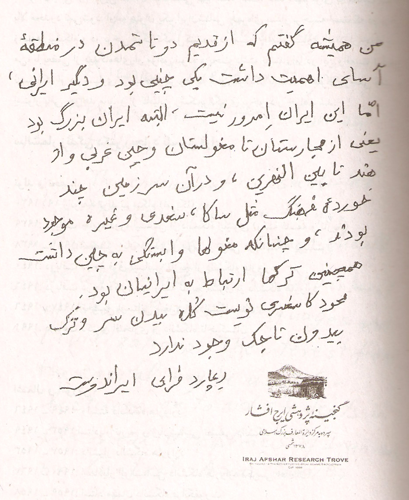
من همیشه گفتم که از قدیم دو تا تمدن در منطقه آسیا اهمیت داشت یکی چینی بود و دیگری ایرانی، امّا این ایرانِ امروز نیست - البته ایران بزرگ بود یعنی از مجارستان تا مغولستان و چین غربی و از هند تا بینالنهرین ، و در آن سرزمین چند خرده فرهنگ مثل ساکا، سغدی و غیره موجود بودند، و چنانکه مغولها وابستگی به چین داشت همچنین ترکها ارتباط به ایرانیان بود. محمود کاشغری نوشت کلاه بدون سر و ترک بدون تاجیک وجود ندارد ریچارد فرای ایراندوست گنجینه پژوهشی ایرج افشار سپرده به مرکز دایرةالمعارف بزرگ اسلامی ۱۳۷۸ شمسی IRAJ AFSHAR RESEARCH TROVE ENTRUSTED TO THE CENTRE FOR THE GREAT ISLAMIC ENCYCLOPAEDIA EST. 2004
من همیشه گفتم که از قدیم دو تا تمدن در منطقه آسیا اهمیت داشت یکی چینی بود و دیگری ایرانی، امّا این ایرانِ امروز نیست - البته ایران بزرگ بود یعنی از مجارستان تا مغولستان و چین غربی و از هند تا بینالنهرین ، و در آن سرزمین چند خرده فرهنگ مثل ساکا، سغدی و غیره موجود بودند، و چنانکه مغولها وابستگی به چین داشت همچنین ترکها ارتباط به ایرانیان بود. محمود کاشغری نوشت کلاه بدون سر و ترک بدون تاجیک وجود ندارد ریچارد فرای ایراندوست گنجینه پژوهشی ایرج افشار سپرده به مرکز دایرةالمعارف بزرگ اسلامی ۱۳۷۸ شمسی IRAJ AFSHAR RESEARCH TROVE ENTRUSTED TO THE CENTRE FOR THE GREAT ISLAMIC ENCYCLOPAEDIA EST. 2004
Review note: Mixed handwritten Persian and small printed Persian/Latin footer. Confirm tiny footer text.
[]
score_all_visible_text
child_handwritten_letter · low_resolution_scan · CER: True · Judge: True
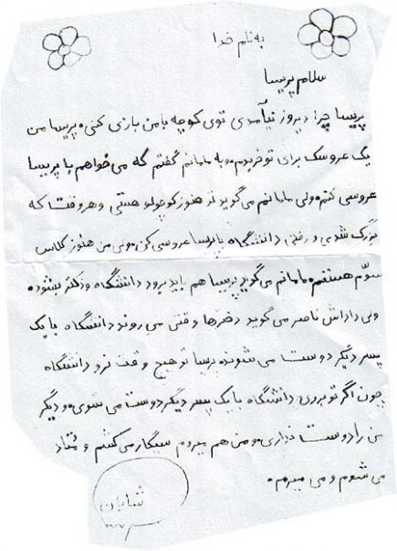
به نام خدا سلام پریسا پریسا چرا دیروز نیآمدی توی کوچه با من بازی کنی. پریسا من یک عروسک برای تو خریدم. و به مامانم گفتم که میخواهم با پریسا عروسی کنم ولی مامانم میگوید تو هنوز کوچولو هستی و هر وقت که بزرگ شدی و رفتی دانشگاه با پریسا عروسی کن. ولی من هنوز کلاس سوم هستم. مامانم میگوید پریسا هم باید برود دانشگاه و دکتر بشود. ولی داداش ناصر میگوید دخترها وقتی میروند دانشگاه با یک پسر دیگر دوست میشوند پریسا تو هیچ وقت نرو دانشگاه چون اگر تو بروی دانشگاه با یک پسر دیگر دوست میشوی و دیگر من را دوست نداری و من هم میروم سیگار میکشم و معتاد میشوم و میمیرم. شایان
به نام خدا سلام پریسا پریسا چرا دیروز نیآمدی توی کوچه با من بازی کنی. پریسا من یک عروسک برای تو خریدم. و به مامانم گفتم که میخواهم با پریسا عروسی کنم ولی مامانم میگوید تو هنوز کوچولو هستی و هر وقت که بزرگ شدی و رفتی دانشگاه با پریسا عروسی کن. ولی من هنوز کلاس سوم هستم. مامانم میگوید پریسا هم باید برود دانشگاه و دکتر بشود. ولی داداش ناصر میگوید دخترها وقتی میروند دانشگاه با یک پسر دیگر دوست میشوند پریسا تو هیچ وقت نرو دانشگاه چون اگر تو بروی دانشگاه با یک پسر دیگر دوست میشوی و دیگر من را دوست نداری و من هم میروم سیگار میکشم و معتاد میشوم و میمیرم. شایان
Review note: Low resolution and informal spelling; verify exact spacing and punctuation without correcting the writer.
[]
score_all_visible_text
handwritten_poetry · phone_photo · CER: True · Judge: True
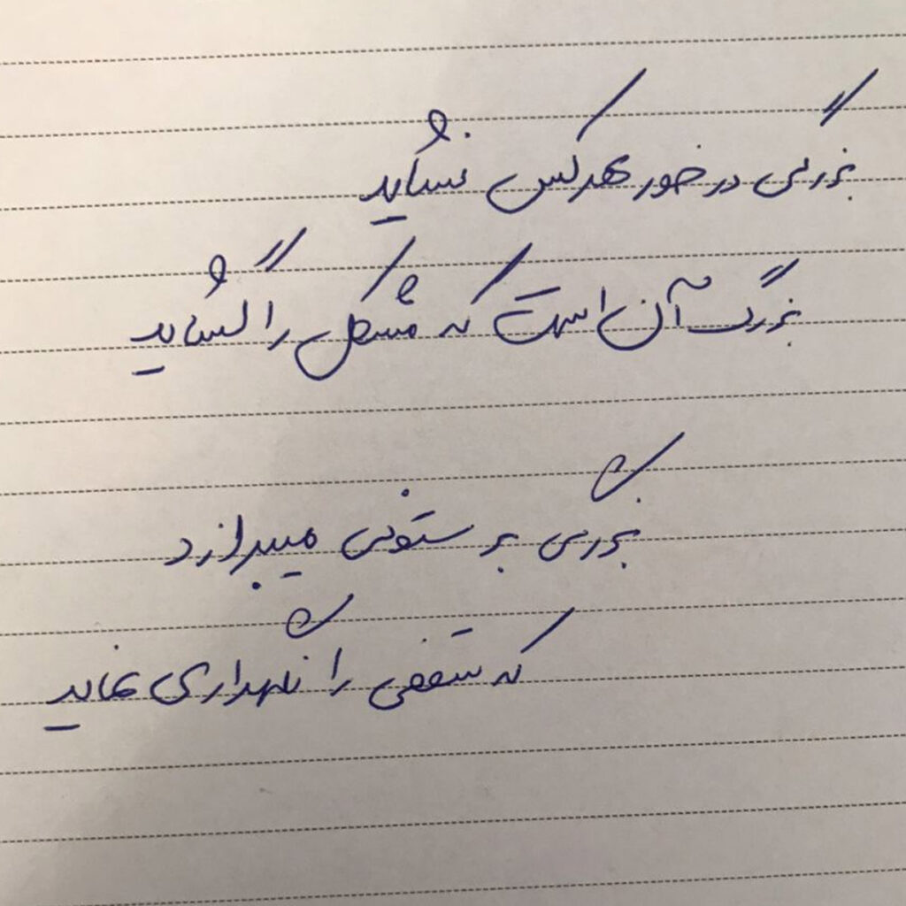
بزرگی درخور هر کس نشاید بزرگ آن است که مشکلی را گشاید بزرگی بر ستونی میبرازد که سقفی را نگهداری نماید
بزرگی درخور هر کس نشاید بزرگ آن است که مشکلی را گشاید بزرگی بر ستونی میبرازد که سقفی را نگهداری نماید
Review note: Verify the exact first hemistich and handwritten orthography.
[]
score_all_visible_text
handwritten_greeting_card · low_resolution_phone_photo · CER: True · Judge: True
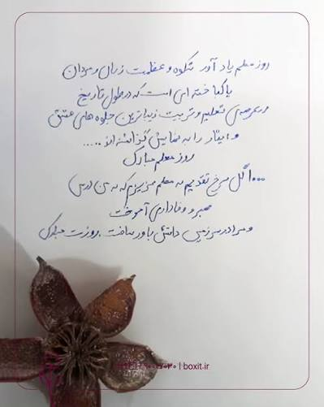
روز معلم یادآور شکوه و عظمت زنان و مردان پاکباختهای است که در طول تاریخ در عرصهی تعلیم و تربیت زیباترین جلوههای عشق و ایثار را به نمایش گذاشتهاند .... روز معلم مبارک ۱۰۰۰ گل سرخ تقدیم به معلم عزیزم که به من درس صبر و وفاداری آموخت و مرا در سرزمین دانش باور ساخت. روزت مبارک boxit.ir | ۰۹۰۰۱۰۳۰۱۰۰
روز معلم یادآور شکوه و عظمت زنان و مردان پاکباختهای است که در طول تاریخ در عرصهی تعلیم و تربیت زیباترین جلوههای عشق و ایثار را به نمایش گذاشتهاند .... روز معلم مبارک ۱۰۰۰ گل سرخ تقدیم به معلم عزیزم که به من درس صبر و وفاداری آموخت و مرا در سرزمین دانش باور ساخت. روزت مبارک boxit.ir | ۰۹۰۰۱۰۳۰۱۰۰
Review note: Decorative object overlaps footer. Confirm the numeral phrase and footer text.
[]
score_all_visible_text
printed_book_page · low_resolution_phone_photo · CER: True · Judge: True
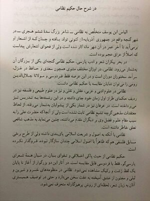
در شرح حال حکیم نظامی الیاس ابن یوسف متخلص به نظامی — شاعر بزرگ سدهٔ ششم هجری — در شهر گنجه واقع در جمهوری آذربایجان کنونی تولد یافته و چنان که از اشعار او برمیآید تا آخر عمر در آن شهر ماندگار شده است ولی از فحوای اشعارش پیداست که اصلاً از عراق عجم بوده است. در بحر بیکران شعر و ادب پارسی، حکیم نظامی گنجهای یکی از بزرگان آن بهشمار میرود. نظامی، در اوزان مختلف مثنوی همچون سعدی و حافظ در غزل، سرآمد سخنوران دوران است و در این عرصه فقط فردوسی و مولانا جلالالدین رومی را میتوان شایان مقایسه با حکیم نظامی دانست. نظامی در علوم ادبی و عربی، عقلی و نقلی و نیز در علوم طبیعی و فلسفه نیز در ردیف حکمای طراز اول زمان خود جای داشته و در این رشتهها به تدریس نیز میپرداخته است. در عرفان نیز در شمار یکی از پیشوایان بهشمار میرفته. از لحاظ معتقدات مذهبی گرچه تشیع نظامی ثابت نشده است ولی از آنجا که حضرت علی را به سبب مقام علم و فضل وی بر دیگران مقدم میداشته، چنین مینماید به مذهب شافعی تعلق خاطر داشته است. نظامی با آنکه به اصول و شریعت اسلامی پایبندی داشته ولی از طرح برخی مسایل فلسفی هم که ظاهراً با اصول اسلامی چندان سازگار نبوده، فروگذار نکرده است. حکیم نظامی از حیث پاکی اخلاقی و تقوای بیان، در میان همه شعرای پارسیگو، فقط با فردوسی قابل مقایسه است. در آثار این دو بزرگوار از آغاز تا پایان یک لفظ زشت و رکیک مشاهده نمیشود. نظامی در منظومههای خسرو و شیرین و لیلی و مجنون از عشق آمیخته به عفت سخن میدارد و حتی در توصیف همبستری آنان به زبان شعر، لحظهای از روش پرهیزگارانه منحرف نمیشود.
در شرح حال حکیم نظامی الیاس ابن یوسف متخلص به نظامی — شاعر بزرگ سدهٔ ششم هجری — در شهر گنجه واقع در جمهوری آذربایجان کنونی تولد یافته و چنان که از اشعار او برمیآید تا آخر عمر در آن شهر ماندگار شده است ولی از فحوای اشعارش پیداست که اصلاً از عراق عجم بوده است. در بحر بیکران شعر و ادب پارسی، حکیم نظامی گنجهای یکی از بزرگان آن بهشمار میرود. نظامی، در اوزان مختلف مثنوی همچون سعدی و حافظ در غزل، سرآمد سخنوران دوران است و در این عرصه فقط فردوسی و مولانا جلالالدین رومی را میتوان شایان مقایسه با حکیم نظامی دانست. نظامی در علوم ادبی و عربی، عقلی و نقلی و نیز در علوم طبیعی و فلسفه نیز در ردیف حکمای طراز اول زمان خود جای داشته و در این رشتهها به تدریس نیز میپرداخته است. در عرفان نیز در شمار یکی از پیشوایان بهشمار میرفته. از لحاظ معتقدات مذهبی گرچه تشیع نظامی ثابت نشده است ولی از آنجا که حضرت علی را به سبب مقام علم و فضل وی بر دیگران مقدم میداشته، چنین مینماید به مذهب شافعی تعلق خاطر داشته است. نظامی با آنکه به اصول و شریعت اسلامی پایبندی داشته ولی از طرح برخی مسایل فلسفی هم که ظاهراً با اصول اسلامی چندان سازگار نبوده، فروگذار نکرده است. حکیم نظامی از حیث پاکی اخلاقی و تقوای بیان، در میان همه شعرای پارسیگو، فقط با فردوسی قابل مقایسه است. در آثار این دو بزرگوار از آغاز تا پایان یک لفظ زشت و رکیک مشاهده نمیشود. نظامی در منظومههای خسرو و شیرین و لیلی و مجنون از عشق آمیخته به عفت سخن میدارد و حتی در توصیف همبستری آنان به زبان شعر، لحظهای از روش پرهیزگارانه منحرف نمیشود.
Review note: Very low resolution and uneven illumination; verify punctuation and short words.
[]
score_all_visible_text
printed_book_page_partial_crop · perspective_phone_photo · CER: True · Judge: True
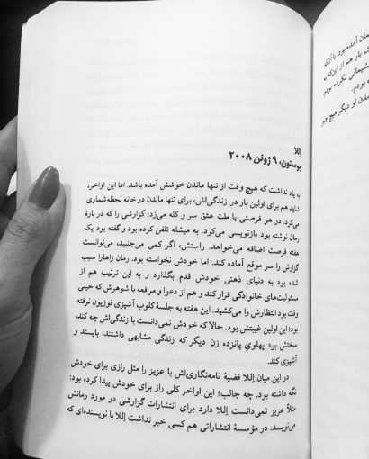
اللا بوستون، ۹ ژوئن ۲۰۰۸ به یاد نداشت که هیچ وقت از تنها ماندن خوشش آمده باشد. اما این اواخر، شاید هم برای اولین بار در زندگیاش، برای تنها ماندن در خانه لحظه شماری میکرد. در هر فرصتی با ملت عشق سر و کله میزد؛ گزارشی را که دربارهٔ رمان نوشته بود بازنویسی میکرد. به میشله تلفن کرده بود و گفته بود یک هفته فرصت اضافه میخواهد. راستش، اگر کمی میجنبید، میتوانست گزارش را سر موقع آماده کند. اما خودش نخواسته بود. رمان زاهارا سبب شده بود به دنیای ذهنی خودش قدم بگذارد و به این ترتیب هم از مسئولیتهای خانوادگی فرار کند و هم از دعوا و مرافعه با شوهرش که خیلی وقت بود انتظارش را میکشید. این هفته به جلسهٔ کلوب آشپزی فوزیون نرفته بود؛ این اولین غیبتش بود. حالا که خودش نمیدانست با زندگیاش چه کند، سختش بود پهلوی پانزده زن دیگر که زندگی مشابهی داشتند، بایستد و آشپزی کند. در این میان إلا قضیهٔ نامهنگاریاش با عزیز را مثل رازی برای خودش نگه داشته بود. چه جالب؛ این اواخر کلی راز برای خودش پیدا کرده بود: مثلاً عزیز نمیدانست إلا دارد برای انتشارات گزارشی در مورد رمانش مینویسد. در مؤسسهٔ انتشاراتی هم کسی خبر نداشت إلا با نویسندهای که
اللا بوستون، ۹ ژوئن ۲۰۰۸ به یاد نداشت که هیچ وقت از تنها ماندن خوشش آمده باشد. اما این اواخر، شاید هم برای اولین بار در زندگیاش، برای تنها ماندن در خانه لحظه شماری میکرد. در هر فرصتی با ملت عشق سر و کله میزد؛ گزارشی را که دربارهٔ رمان نوشته بود بازنویسی میکرد. به میشله تلفن کرده بود و گفته بود یک هفته فرصت اضافه میخواهد. راستش، اگر کمی میجنبید، میتوانست گزارش را سر موقع آماده کند. اما خودش نخواسته بود. رمان زاهارا سبب شده بود به دنیای ذهنی خودش قدم بگذارد و به این ترتیب هم از مسئولیتهای خانوادگی فرار کند و هم از دعوا و مرافعه با شوهرش که خیلی وقت بود انتظارش را میکشید. این هفته به جلسهٔ کلوب آشپزی فوزیون نرفته بود؛ این اولین غیبتش بود. حالا که خودش نمیدانست با زندگیاش چه کند، سختش بود پهلوی پانزده زن دیگر که زندگی مشابهی داشتند، بایستد و آشپزی کند. در این میان إلا قضیهٔ نامهنگاریاش با عزیز را مثل رازی برای خودش نگه داشته بود. چه جالب؛ این اواخر کلی راز برای خودش پیدا کرده بود: مثلاً عزیز نمیدانست إلا دارد برای انتشارات گزارشی در مورد رمانش مینویسد. در مؤسسهٔ انتشاراتی هم کسی خبر نداشت إلا با نویسندهای که
Review note: Finger occlusion and page perspective. The final sentence is cropped and should remain incomplete.
[]
score_all_visible_text
printed_business_letter_template · low_resolution_scan · CER: True · Judge: True
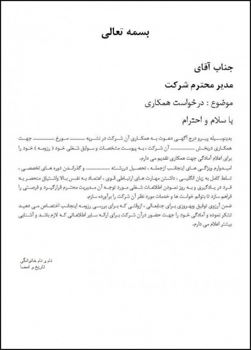
بسمه تعالی جناب آقای مدیر محترم شرکت موضوع : درخواست همکاری با سلام و احترام بدینوسیله پیرو درج آگهی دعوت به همکاری آن شرکت در نشریه ............... مورخ ................ جهت همکاری دربخش ................ آن شرکت ، به پیوست مشخصات و سوابق شغلی خود ( رزومه ) خود را برای اعلام آمادگی جهت همکاری تقدیم می دارم. امیدوارم ویژگی های اینجانب ازجمله ، تحصیل دررشته ................ و گذراندن دوره های تخصصی ، تسلط کامل به زبان انگلیسی ، داشتن مهارت های ارتباطی قوی ، اعتماد به نفس بالا واشتیاق منحصر به فرد در یادگیری و به روز نمودن اطلاعات شغلی مورد توجه آن مدیریت محترم قرارگیرد و فرصتی را فراهم سازد تا بتوانم خواست ها و خدمات مورد نظر آن شرکت را برآورده سازم. ضمن آرزوی توفیق وبهروزی برای جنابعالی ، ازوقتی که برای بررسی رزومه اینجانب اختصاص می دهید تشکر نموده و آمادگی خود را جهت حضور درآن شرکت برای ارائه سایر اطلاعاتی که لازم باشد و آشنایی بیشتر اعلام می دارم. نام و نام خانوادگی تاریخ و امضا
بسمه تعالی جناب آقای مدیر محترم شرکت موضوع : درخواست همکاری با سلام و احترام بدینوسیله پیرو درج آگهی دعوت به همکاری آن شرکت در نشریه ............... مورخ ................ جهت همکاری دربخش ................ آن شرکت ، به پیوست مشخصات و سوابق شغلی خود ( رزومه ) خود را برای اعلام آمادگی جهت همکاری تقدیم می دارم. امیدوارم ویژگی های اینجانب ازجمله ، تحصیل دررشته ................ و گذراندن دوره های تخصصی ، تسلط کامل به زبان انگلیسی ، داشتن مهارت های ارتباطی قوی ، اعتماد به نفس بالا واشتیاق منحصر به فرد در یادگیری و به روز نمودن اطلاعات شغلی مورد توجه آن مدیریت محترم قرارگیرد و فرصتی را فراهم سازد تا بتوانم خواست ها و خدمات مورد نظر آن شرکت را برآورده سازم. ضمن آرزوی توفیق وبهروزی برای جنابعالی ، ازوقتی که برای بررسی رزومه اینجانب اختصاص می دهید تشکر نموده و آمادگی خود را جهت حضور درآن شرکت برای ارائه سایر اطلاعاتی که لازم باشد و آشنایی بیشتر اعلام می دارم. نام و نام خانوادگی تاریخ و امضا
Review note: Template contains dotted blanks and irregular source spacing; preserve visible text without editorial correction.
[]
score_all_visible_text
printed_social_quote_graphic · digital_or_screenshot · CER: True · Judge: True
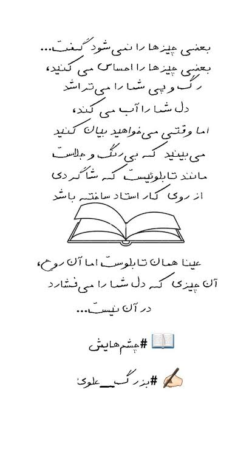
بعضی چیزها را نمیشود گفت... بعضی چیزها را احساس میکنید، رگ و پی شما را میتراشد دل شما را آب میکند، اما وقتی میخواهید بیان کنید میبینید که بیرنگ و جلاست مانند تابلوییست که شاگردی از روی کار استاد ساخته باشد عینا همان تابلوست اما آن روح، آن چیزی که دل شما را میفشارد در آن نیست... 📖 #چشم_هایش ✍️ #بزرگ_علوی
بعضی چیزها را نمیشود گفت... بعضی چیزها را احساس میکنید، رگ و پی شما را میتراشد دل شما را آب میکند، اما وقتی میخواهید بیان کنید میبینید که بیرنگ و جلاست مانند تابلوییست که شاگردی از روی کار استاد ساخته باشد عینا همان تابلوست اما آن روح، آن چیزی که دل شما را میفشارد در آن نیست... 📖 #چشم_هایش ✍️ #بزرگ_علوی
Review note: Historical folder name is misleading; content is printed, not handwritten.
[]
score_all_visible_text
printed_book_page · clean_scan · CER: True · Judge: True
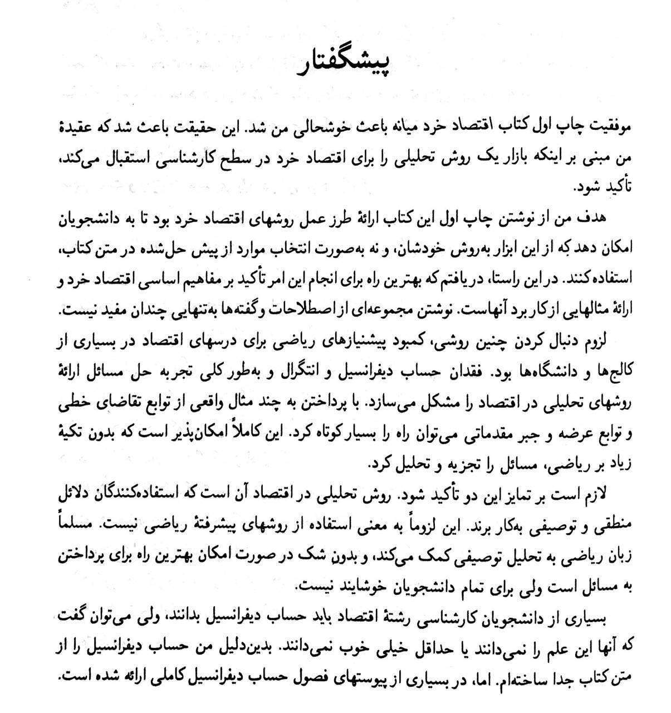
پیشگفتار موفقیت چاپ اول کتاب اقتصاد خرد میانه باعث خوشحالی من شد. این حقیقت باعث شد که عقیده من مبنی بر اینکه بازار یک روش تحلیلی را برای اقتصاد خرد در سطح کارشناسی استقبال میکند، تأکید شود. هدف من از نوشتن چاپ اول این کتاب ارائهٔ طرز عمل روشهای اقتصاد خرد بود تا به دانشجویان امکان دهد که از این ابزار به روش خودشان، و نه بهصورت انتخاب موارد از پیش حلشده در متن کتاب، استفاده کنند. در این راستا، دریافتم که بهترین راه برای انجام این امر تأکید بر مفاهیم اساسی اقتصاد خرد و ارائهٔ مثالهایی از کاربرد آنهاست. نوشتن مجموعهای از اصطلاحات و گفتهها بهتنهایی چندان مفید نیست. لزوم دنبال کردن چنین روشی، کمبود پیشنیازهای ریاضی برای درسهای اقتصاد در بسیاری از کالجها و دانشگاهها بود. فقدان حساب دیفرانسیل و انتگرال و بهطور کلی تجربه حل مسائل ارائهٔ روشهای تحلیلی در اقتصاد را مشکل میسازد. با پرداختن به چند مثال واقعی از توابع تقاضای خطی و توابع عرضه و جبر مقدماتی میتوان راه را بسیار کوتاه کرد. این کاملاً امکانپذیر است که بدون تکیهٔ زیاد بر ریاضی، مسائل را تجزیه و تحلیل کرد. لازم است بر تمایز این دو تأکید شود. روش تحلیلی در اقتصاد آن است که استفادهکنندگان دلائل منطقی و توصیفی بهکار برند. این لزوماً به معنی استفاده از روشهای پیشرفتهٔ ریاضی نیست. مسلماً زبان ریاضی به تحلیل توصیفی کمک میکند، و بدون شک در صورت امکان بهترین راه برای پرداختن به مسائل است ولی برای تمام دانشجویان خوشایند نیست. بسیاری از دانشجویان کارشناسی رشتهٔ اقتصاد باید حساب دیفرانسیل بدانند، ولی میتوان گفت که آنها این علم را نمیدانند یا حداقل خیلی خوب نمیدانند. بدیندلیل من حساب دیفرانسیل را از متن کتاب جدا ساختهام. اما، در بسیاری از پیوستهای فصول حساب دیفرانسیل کاملی ارائه شده است.
پیشگفتار موفقیت چاپ اول کتاب اقتصاد خرد میانه باعث خوشحالی من شد. این حقیقت باعث شد که عقیده من مبنی بر اینکه بازار یک روش تحلیلی را برای اقتصاد خرد در سطح کارشناسی استقبال میکند، تأکید شود. هدف من از نوشتن چاپ اول این کتاب ارائهٔ طرز عمل روشهای اقتصاد خرد بود تا به دانشجویان امکان دهد که از این ابزار به روش خودشان، و نه بهصورت انتخاب موارد از پیش حلشده در متن کتاب، استفاده کنند. در این راستا، دریافتم که بهترین راه برای انجام این امر تأکید بر مفاهیم اساسی اقتصاد خرد و ارائهٔ مثالهایی از کاربرد آنهاست. نوشتن مجموعهای از اصطلاحات و گفتهها بهتنهایی چندان مفید نیست. لزوم دنبال کردن چنین روشی، کمبود پیشنیازهای ریاضی برای درسهای اقتصاد در بسیاری از کالجها و دانشگاهها بود. فقدان حساب دیفرانسیل و انتگرال و بهطور کلی تجربه حل مسائل ارائهٔ روشهای تحلیلی در اقتصاد را مشکل میسازد. با پرداختن به چند مثال واقعی از توابع تقاضای خطی و توابع عرضه و جبر مقدماتی میتوان راه را بسیار کوتاه کرد. این کاملاً امکانپذیر است که بدون تکیهٔ زیاد بر ریاضی، مسائل را تجزیه و تحلیل کرد. لازم است بر تمایز این دو تأکید شود. روش تحلیلی در اقتصاد آن است که استفادهکنندگان دلائل منطقی و توصیفی بهکار برند. این لزوماً به معنی استفاده از روشهای پیشرفتهٔ ریاضی نیست. مسلماً زبان ریاضی به تحلیل توصیفی کمک میکند، و بدون شک در صورت امکان بهترین راه برای پرداختن به مسائل است ولی برای تمام دانشجویان خوشایند نیست. بسیاری از دانشجویان کارشناسی رشتهٔ اقتصاد باید حساب دیفرانسیل بدانند، ولی میتوان گفت که آنها این علم را نمیدانند یا حداقل خیلی خوب نمیدانند. بدیندلیل من حساب دیفرانسیل را از متن کتاب جدا ساختهام. اما، در بسیاری از پیوستهای فصول حساب دیفرانسیل کاملی ارائه شده است.
Review note: Clear linear text. Confirm typographic variants and ZWNJ policy.
[]
score_all_visible_text
printed_book_page · clean_scan · CER: True · Judge: True
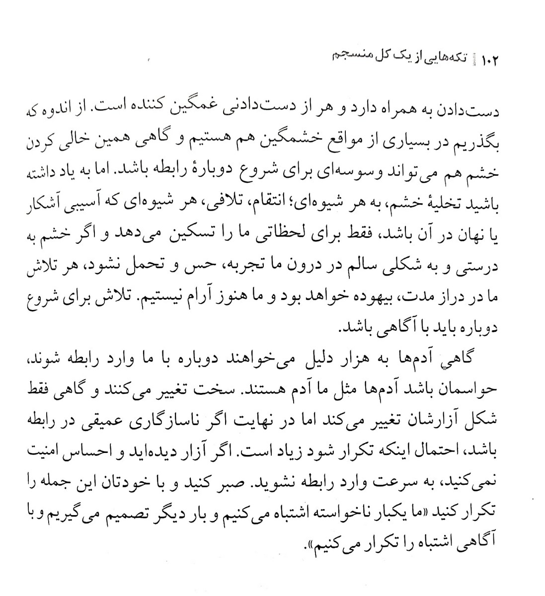
۱۰۲ | تکههایی از یک کل منسجم دستدادن به همراه دارد و هر از دستدادنی غمگین کننده است. از اندوه که بگذریم در بسیاری از مواقع خشمگین هم هستیم و گاهی همین خالی کردن خشم هم میتواند وسوسهای برای شروع دوبارهٔ رابطه باشد. اما به یاد داشته باشید تخلیهٔ خشم، به هر شیوهای؛ انتقام، تلافی، هر شیوهای که آسیبی آشکار یا نهان در آن باشد، فقط برای لحظاتی ما را تسکین میدهد و اگر خشم به درستی و به شکلی سالم در درون ما تجربه، حس و تحمل نشود، هر تلاش ما در دراز مدت، بیهوده خواهد بود و ما هنوز آرام نیستیم. تلاش برای شروع دوباره باید با آگاهی باشد. گاهی آدمها به هزار دلیل میخواهند دوباره با ما وارد رابطه شوند، حواسمان باشد آدمها مثل ما آدم هستند. سخت تغییر میکنند و گاهی فقط شکل آزارشان تغییر میکند اما در نهایت اگر ناسازگاری عمیقی در رابطه باشد، احتمال اینکه تکرار شود زیاد است. اگر آزار دیدهاید و احساس امنیت نمیکنید، به سرعت وارد رابطه نشوید. صبر کنید و با خودتان این جمله را تکرار کنید «ما یکبار ناخواسته اشتباه میکنیم و بار دیگر تصمیم میگیریم و با آگاهی اشتباه را تکرار میکنیم».
۱۰۲ | تکههایی از یک کل منسجم دستدادن به همراه دارد و هر از دستدادنی غمگین کننده است. از اندوه که بگذریم در بسیاری از مواقع خشمگین هم هستیم و گاهی همین خالی کردن خشم هم میتواند وسوسهای برای شروع دوبارهٔ رابطه باشد. اما به یاد داشته باشید تخلیهٔ خشم، به هر شیوهای؛ انتقام، تلافی، هر شیوهای که آسیبی آشکار یا نهان در آن باشد، فقط برای لحظاتی ما را تسکین میدهد و اگر خشم به درستی و به شکلی سالم در درون ما تجربه، حس و تحمل نشود، هر تلاش ما در دراز مدت، بیهوده خواهد بود و ما هنوز آرام نیستیم. تلاش برای شروع دوباره باید با آگاهی باشد. گاهی آدمها به هزار دلیل میخواهند دوباره با ما وارد رابطه شوند، حواسمان باشد آدمها مثل ما آدم هستند. سخت تغییر میکنند و گاهی فقط شکل آزارشان تغییر میکند اما در نهایت اگر ناسازگاری عمیقی در رابطه باشد، احتمال اینکه تکرار شود زیاد است. اگر آزار دیدهاید و احساس امنیت نمیکنید، به سرعت وارد رابطه نشوید. صبر کنید و با خودتان این جمله را تکرار کنید «ما یکبار ناخواسته اشتباه میکنیم و بار دیگر تصمیم میگیریم و با آگاهی اشتباه را تکرار میکنیم».
Review note: Clear linear text including page header and quotation marks.
[]
score_all_visible_text
printed_social_quote_graphic · digital_or_screenshot · CER: True · Judge: True
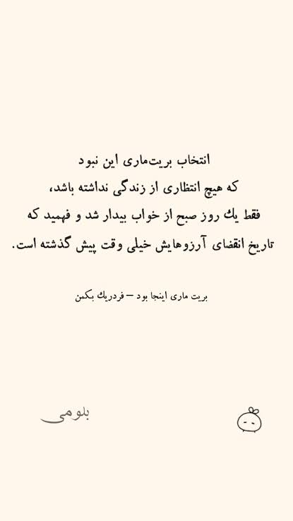
انتخاب بریتماری این نبود که هیچ انتظاری از زندگی نداشته باشد، فقط یک روز صبح از خواب بیدار شد و فهمید که تاریخ انقضای آرزوهایش خیلی وقت پیش گذشته است. بریت ماری اینجا بود – فردریک بکمن بلومی
انتخاب بریتماری این نبود که هیچ انتظاری از زندگی نداشته باشد، فقط یک روز صبح از خواب بیدار شد و فهمید که تاریخ انقضای آرزوهایش خیلی وقت پیش گذشته است. بریت ماری اینجا بود – فردریک بکمن بلومی
Review note: Simple centered quote with attribution/branding.
[]
score_all_visible_text